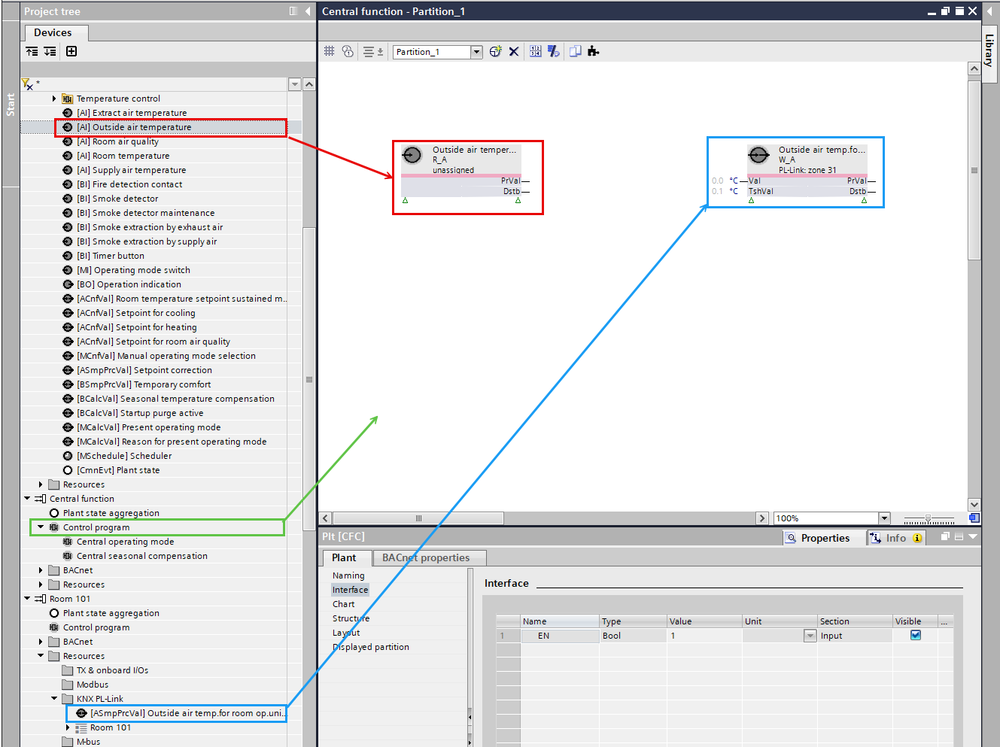
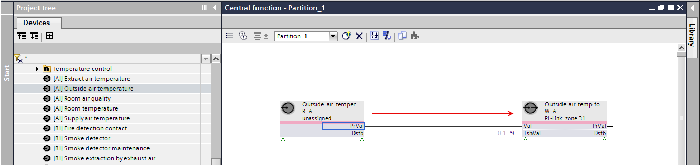
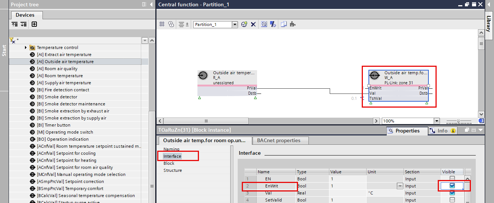
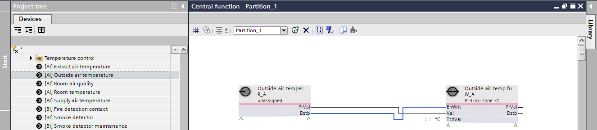
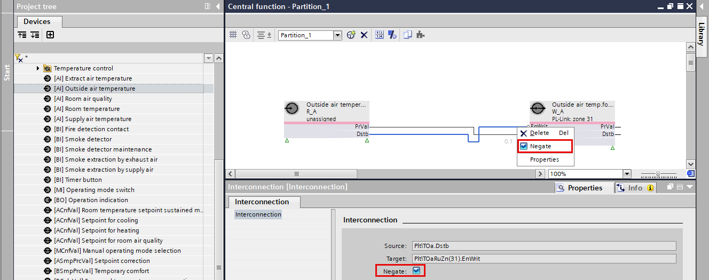
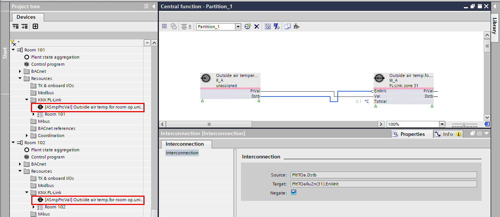

Adapting the RDG2 outside air temperature indication
In order for the outside air temperature to be displayed on the RDG2 devices, a small program structure must be created in the control program. This control program must not be created in a device chart under any circumstances, as otherwise the other outside air temperatures will not be connected automatically.
Preparation of the control program
- The configuration for displaying the outside temperature on the RDG2 device is activated.
Configuring an RDG2 outside air temperature indication
- Go to Building > Building structure.
- Right-click a device and select Go to engineering.
- Open the KNX PL-Link task.
- In the Plants navigation view, select a plant with an outside air temperature.
- Right-click and select Show in program.
- The Programming editor opens.
- In the Project tree, select a control program, for example, central function.
Note: Do not use the device chart program of a room. - Right-click and select Open.
- The control program opens.
- In the Project tree, select an Outside air temperature.
- Drag the Outside air temperature to the control program.
- In the Project tree, select a [Room] > Resources > KNX PL-Link.
- Drag the Outside air temp.for room op unit to the control program.

Connecting the function blocks
- Drag the Outside air temperature FB PrVal output pin to the target Outside air temp.for room op unit FB Val input pin to create a connection.

- Select the Outside air temp.for room op unit FB.
- Do the following:
- In the function block pane, select the Interface task.
- Select the EnWrit property and select the Visible check box.

- Drag the Outside air temperature FB Dstb output pin to the target Outside air temp.for room op unit FB EnWrit input pin to create a connection.

- Do the following:
- Select the create connection.
- Right-click the connection and select Negate.
Note: This connection ensures that only valid values are sent to the external temperature of the RDG2 device. 
- By distributing the outside air temperature in the control program, this information can be displayed on every RDG2 device.
